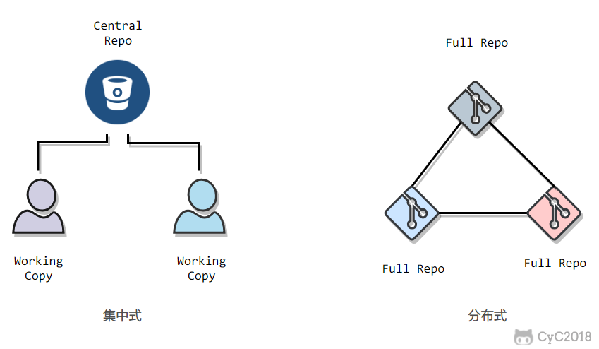
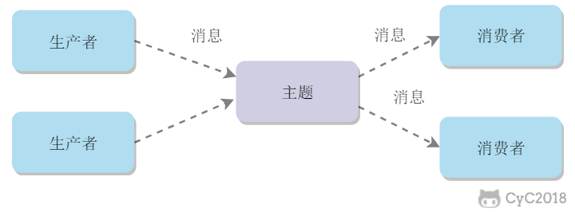

Linux 环境搭建 - Solr8.3.0 发表于 2019-11-13 分类于 Linux环境搭建 下载 solr 官网下载地址https://lucene.apache.org/solr/downloads.html 文件链接(2019-11-12可以访问)solr-8.3.0.zip 阅读全文 »
Linux 环境搭建 - Zookeeper 3.5.6 发表于 2019-11-13 分类于 Linux环境搭建 下载 zookeeper 官网下载地址https://zookeeper.apache.org/releases.html 文件链接(2019-11-12可以访问)apache-zookeeper-3.5.6-bin.tar.gz 阅读全文 »
网络技术 - Linux 发表于 2019-11-05 更新于 2019-11-13 分类于 网络技术 一、常用操作以及概念快捷键 Tab：命令和文件名补全； Ctrl+C：中断正在运行的程序； Ctrl+D：结束键盘输入（End Of File，EOF） 求助1. --help指令的基本用法与选项介绍。2. manman 是 manual 的缩写，将指令的具体信息显示出来。当执行 man date 时，有 DATE(1) 出现，其中的数字代表指令的类型，常用的数字及其类型如下： 阅读全文 »
网络技术 - Http 发表于 2019-11-05 更新于 2019-11-13 分类于 网络技术 一 、基础概念URIURI 包含 URL 和 URN。 请求和响应报文1. 请求报文 2. 响应报文 二、HTTP 方法客户端发送的 请求报文 第一行为请求行，包含了方法字段。GET 获取资源 当前网络请求中，绝大部分使用的是 GET 方法。HEAD 获取报文首部 和 GET 方法类似，但是不返回报文实体主体部分。 阅读全文 »
网络技术 - 代码可读性 发表于 2019-11-05 更新于 2019-11-13 分类于 网络技术 一、可读性的重要性编程有很大一部分时间是在阅读代码，不仅要阅读自己的代码，而且要阅读别人的代码。因此，可读性良好的代码能够大大提高编程效率。可读性良好的代码往往会让代码架构更好，因为程序员更愿意去修改这部分代码，而且也更容易修改。只有在核心领域为了效率才可以放弃可读性，否则可读性是第一位。二、用名字表达代码含义 阅读全文 »
网络技术 - 设计模式 发表于 2019-11-05 更新于 2019-11-13 分类于 网络技术 一、概述设计模式是解决问题的方案，学习现有的设计模式可以做到经验复用。拥有设计模式词汇，在沟通时就能用更少的词汇来讨论，并且不需要了解底层细节。二、创建型1. 单例（Singleton）Intent确保一个类只有一个实例，并提供该实例的全局访问点。Class Diagram使用一个私有构造函数、一个私有静态变量以及一个公有静态函数来实现。 阅读全文 »
网络技术 - Git 发表于 2019-11-05 更新于 2019-11-13 分类于 网络技术 集中式与分布式Git 属于分布式版本控制系统，而 SVN 属于集中式。  集中式版本控制只有中心服务器拥有一份代码，而分布式版本控制每个人的电脑上就有一份完整的代码。集中式版本控制有安全性问题，当中心服务器挂了所有人都没办法工作了。集中式版本控制需要连网才能工作，如果网速过慢，那么提交一个文件会慢的无法让人忍受。而分布式版本控制不需要连网就能工作。 阅读全文 »
网络技术 - 消息队列 发表于 2019-11-05 更新于 2019-11-13 分类于 网络技术 一、消息模型点对点消息生产者向消息队列中发送了一个消息之后，只能被一个消费者消费一次。 发布/订阅消息生产者向频道发送一个消息之后，多个消费者可以从该频道订阅到这条消息并消费。  发布与订阅模式和观察者模式有以下不同： 观察者模式中，观察者和主题都知道对方的存在；而在发布与订阅模式中，生产者与消费者不知道对方的存在，它们之间通过频道进行通信。 观察者模式是同步的，当事件触发时，主题会调用观察者的方法，然后等待方法返回；而发布与订阅模式是异步的，生产者向频道发送一个消息之后，就不需要关心消费者何时去订阅这个消息，可以立即返回。 阅读全文 »
网络技术 - 面向对象思想 发表于 2019-11-05 更新于 2019-11-13 分类于 网络技术 一、三大特性封装利用抽象数据类型将数据和基于数据的操作封装在一起，使其构成一个不可分割的独立实体。数据被保护在抽象数据类型的内部，尽可能地隐藏内部的细节，只保留一些对外的接口使其与外部发生联系。用户无需关心对象内部的细节，但可以通过对象对外提供的接口来访问该对象。优点： 减少耦合：可以独立地开发、测试、优化、使用、理解和修改 减轻维护的负担：可以更容易被程序员理解，并且在调试的时候可以不影响其他模块 有效地调节性能：可以通过剖析来确定哪些模块影响了系统的性能 提高软件的可重用性 降低了构建大型系统的风险：即使整个系统不可用，但是这些独立的模块却有可能是可用的 阅读全文 »
网络技术 - 集群 发表于 2019-11-05 更新于 2019-11-13 分类于 网络技术 一、负载均衡集群中的应用服务器（节点）通常被设计成无状态，用户可以请求任何一个节点。负载均衡器会根据集群中每个节点的负载情况，将用户请求转发到合适的节点上。负载均衡器可以用来实现高可用以及伸缩性： 高可用：当某个节点故障时，负载均衡器会将用户请求转发到另外的节点上，从而保证所有服务持续可用； 伸缩性：根据系统整体负载情况，可以很容易地添加或移除节点。 阅读全文 »